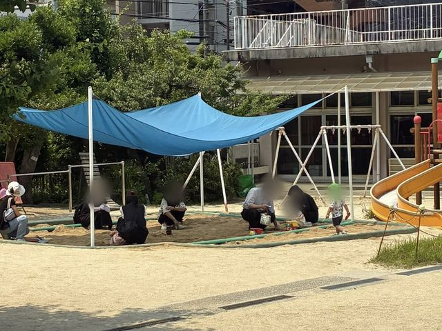
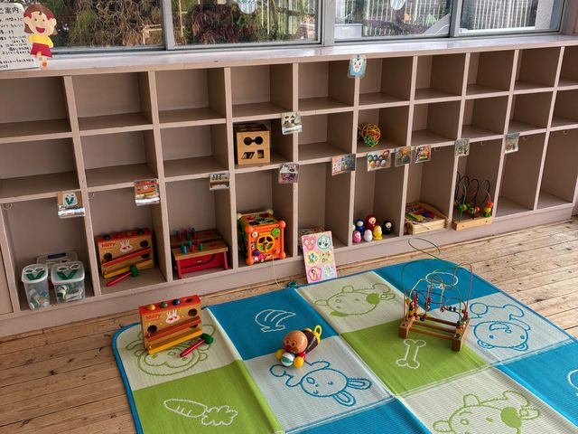
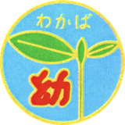

教育方針、目標、沿革をご紹介します
生きることに喜びを持ち、
社会で自立できる人間の育成
特定の宗教、政治にとらわれることなく、幼児教育の神髄を求めて、また地域の実情を絶えず勘案して教育内容の向上をはかっています。
また子どもの成長、発達段階に応じて、教材、教具を整備し、教育内容を充実させ、行事も計画します。
広い庭には、固定遊具が多種あり、中でも子どもの家では、ままごと遊びが盛んです。
子どもに適した部屋、特に、室内に設けられたトイレ・手洗い・ロッカー、すべて子ども中心に作られており、子どもが主体的に生活できるように考えられております。


修了の日を迎えた時、
ああしなさい、こうしなさいと言うだけでは子どもは変わりません。
子どもが変わるのは、本人が「はっ」と気づくような、出会いをしたときです。
わかばの教育は、一人一人に合った「出会い」の場を設定することで「三つ子の魂」を育てます。
「三つ子の魂百まで」という言葉があります。
これは、幼児の頃の特性は一生変わらないもの、という意味です。
わかば幼稚園では、幼稚園にいる間のお子さんの姿のみを見るのではなく、成長して社会に出てからも伸びる力をもった子どもを育成することを目指しています。
人はみな同じではなく、それぞれに独特な性格や持ち味、良さがあります。
それを活かした幸せな人生を願っています。
社会に出てから大成できるような、そんな人間形成に役立つ教育を目指しています。
行事などは見栄えを重視するのではなく、子どもが身につけた力の過程を見ていただく場と考えています。
そこを基盤として、次への目標を目指したいものです。
また、字や数を教えることについて、個別な対応はあっても一斉には取り上げていません。
肝心なことは『話は最後までしっかり聞くこと』と、『話の内容が理解できること』です。
幼児期のうちに身につけて進学してほしいと願っています。
せき先生は名古屋市立幼稚園の園長や椙山幼稚園の主事を経て、わかば幼稚園の創立に至りました。
実績と歴史を見る →
〒464-0032 名古屋市千種区猫洞通2丁目13番地
見学は随時受け付けています。